Asterism is an interactive music album. A digital series of playable music videos that allow exploration and interaction with visual worlds that relate to the narrative of each music track. The narrative follows themes around personal expression, self-acceptance, anxiety and mental health.
It is set on and around the planets of the solar system, taking the player on a journey from the sun out towards the expanse of space. Each song on the album is represented by a planet or location in space that acts as the setting for an interactive music video, where the player may take actions that relate to the narrative and the world. The space between songs acts as a set of interludes where the overarching narrative surrounding the songs unfolds.
The worlds of the songs each have different visual styles, with a mixture of digital and non-digital artforms, but there is a consistency with simple controls across the game to allow the experience to be accessible, immersive and playful.
Asterism is currently in development and is being funded by Creative Scotland.
